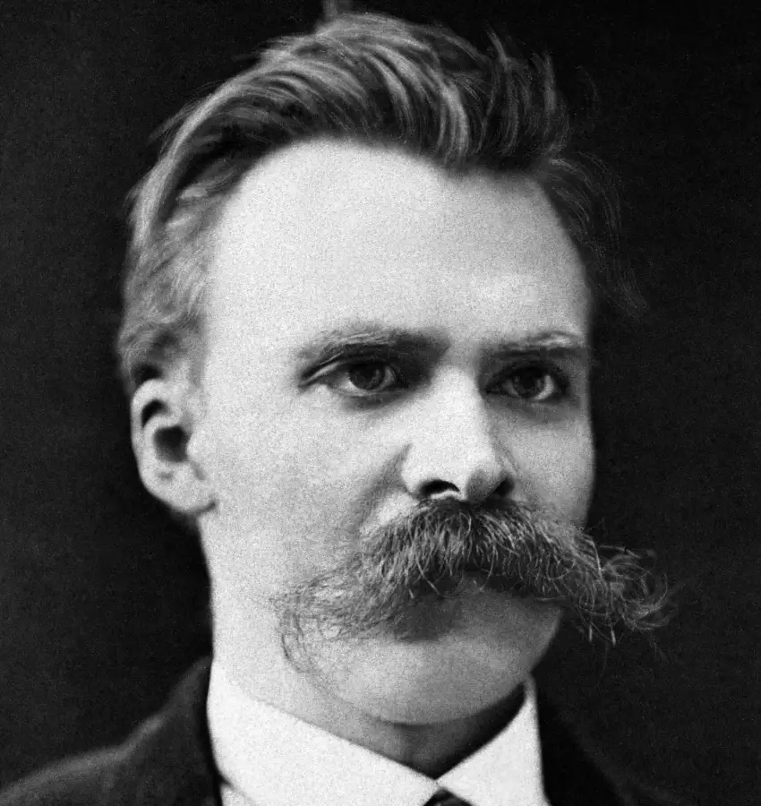

About BMW Classics Garage
Our Heritage & CraftAt BMW Classics Garage, restoring and maintaining a vintage BMW is far more than routine mechanical repair, it is a labor of love dedicated to preserving automotive art. Founded by lifelong enthusiasts, our workshop was born from an unyielding passion for the legendary engineering, distinct styling, and undeniable soul of classic BMWs.
Every member of our team brings decades of specialized experience, meticulous attention to detail, and a deep, personal reverence for the Ultimate Driving Machine. Whether we are conducting a nut-and-bolt restoration on a rare 2002 Turbo, tuning the high-strung inline-six of an E30 M3, or meticulously sourcing authentic period-correct parts for an E9 Coupe, we treat every single car as if it were our own.
Our mission is simple: to honor the legacy of the Bavarian marque by providing uncompromising quality, authentic workmanship, and tailored care for your classic. When you bring your automobile to our garage, you are not just dropping off a vehicle; you are joining a community of passionate custodians who value precision, heritage, and the pure thrill of the open road.
25+
Years Experience100%
Period-Correct55+
Classics RestoredMeet Our Restoration Experts
The master craftsmen and engineers behind the workshop floor.
Hans Gruber
Lead Restorer & Engine SpecialistOver 25 years specializing in vintage BMW M-power inline-six engine rebuilds and fuel injection tuning.

Friedrich Nietzsche
Bodywork & Paint MasterExpert in traditional metal fabrication, corrosion remediation, and authentic Glasurit classic paint matching.
Arnold Schwarzenegger
Dashboard & Logistics LeadManages parts sourcing globally, client milestone reporting, and workflow optimization through our digital dashboard.
Workshop Insights & Process
A dynamic look into our development and restoration workflow.